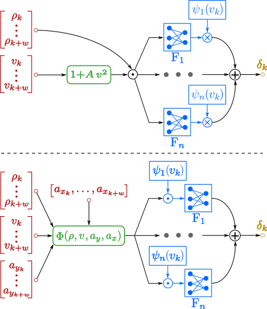

.svg)
We benchmark new and existing methods for time-optimal planning and control near the handling limits, including geometric controllers, MS-NN steering controllers, and an online velocity planner. These methods have never been used in a unified closed-loop stack for real-world autonomous racing.
We present a new MS-NN that learns the nonlinear coupled longitudinal-lateral dynamics for steering control at high accelerations, while preserving interpretability.
Through several ablations, we analyze the performance of single modules and their combinations, quantifying the impact of the MS-NN and online velocity replanning on trajectory planning, tracking, and lap-time.
We conduct our experiments on a 1:10-scale autonomous racing platform, and we publicly release all software modules, datasets, and results.
Generate offline the time-optimal raceline based on a point-mass model with user-defined acceleration and velocity constraints.
CodeThe path-tracking controller computes future path curvature references. We compare two path tracking controllers, the Pure Pursuit (PP) and the Clothoid-based (CL)

The velocity replanning module, which computes time-optimal velocity and longitudinal-lateral acceleration profiles over a planning horizon via a forward-backward optimizer (FBGA) accounting for the vehicle's nonlinear constraints on accelerations and velocity.
The velocity profile is tracked by the motor controller, while steering commands are generated by a new MS-NN using curvature, velocity, and acceleration references. The estimated vehicle state closes the loop.

↑ = higher is better, ↓ = lower is better.
| Dataset | MS-NN | RMSE↓ [m] | FVU↓ [-] |
|---|
| Controller | Path Tracking [cm] | Lap Time [s] ↓ | RMS Steering Rate [rad/s] ↓ | |
|---|---|---|---|---|
| Mean | Max | |||
| Lateral Controller | Online Velocity Replanning | g-g-v Type | Max v [m/s] | Max ax [m/s2] | Max ay [m/s2] | Lap Time [s] |
|---|
Track A: CL-based path tracking (without MS-NN steering controller and without FBGA velocity planning), with the cautious g-g-v, used to train the MS-NN steering controller.
Track B: PP + MS-NN + FBGA with extended g-g-v (best performance)
The overall best performance is achieved by the PP + MS-NN + FBGA configuration under the extended g-g-v envelope, reaching: